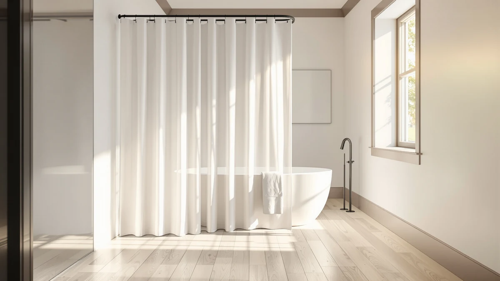

Mysky HOME Floor Review (2026): Worth It?
Prices and picks verified as of November 2026. Independent, reader-supported reviews.


Quick Answer
This mysky home floor review found the MYSKY HOME Floor to Ceiling panel to be the largest option in this comparison, sized at 100 inches wide by 108 inches long in 100% cotton for $38.21. Shoppers who do not need that oversized coverage, or who want a defined size like BTTN's 108 by 72 inch scalloped linen panel, should compare the three alternatives below first.
Our pick: MYSKY HOME Floor to Ceiling, $38.21 Check Price on Amazon
Bottom line: our top pick is the MYSKY HOME Floor to Ceiling Curtains 108 Inches White Sheer at $38.21.
Things to Know Before You Buy
- This mysky home floor review centers on the MYSKY HOME Floor to Ceiling panel ($38.21), a single 100% cotton panel sized at 100 inches wide by 108 inches long.
- That size runs well past the standard 72 by 72 inch shower curtain, making it a fit for walk-in showers, oversized enclosures, or floor to ceiling windows.
- BTTN, ANRODUO, and Madison Park, covered as alternatives, price between $35.87 and $36.99 and skip the oversized drop for a more standard fit.
- BTTN's Boho Scalloped Linen panel lists an explicit 108 by 72 inch size with a scalloped hem, while ANRODUO's and Madison Park's panels market themselves as extra long without spelling out exact dimensions.
- None of the four listings publish a star rating or review count on this page, so this comparison leans on published specs and pricing rather than owner feedback.
This mysky home floor review puts the MYSKY HOME Floor to Ceiling panel's size, material, and price next to three panels shoppers often weigh against it: BTTN's Boho Scalloped Linen, ANRODUO's Sage Green Extra Long, and Madison Park's Grace Extra Long. At 100 inches wide by 108 inches long, the Mysky panel dwarfs a standard 72 by 72 inch shower curtain, a detail that matters most for walk-in enclosures, oversized tub surrounds, or windows that run from floor to ceiling. That size, paired with a 100% cotton build, sets the terms for who should buy it and who should look elsewhere.
We built this comparison from each listing's published material, size, and current price, since none of the four panels carry a star rating or review count on this page. The MYSKY HOME Floor to Ceiling panel costs $38.21, more than BTTN at $36.99, ANRODUO at $35.99, and Madison Park at $35.87, and its 100 by 108 inch size is the only one of the four spelled out in full here. That combination makes it the pick for an oversized opening and the one to skip if a smaller, better defined panel like BTTN's 108 by 72 inch scalloped linen curtain already fits your space.
Why You Should Trust Us
Best Shower Curtains reviews shower curtains and bathroom textiles by comparing manufacturer specs, current pricing, and verified owner feedback from the retailers that sell them, not by running a private testing lab. Ilane Tall, our home and bath editor, researched this mysky home floor review by checking the MYSKY HOME Floor to Ceiling panel's listed material, size, and price against BTTN, ANRODUO, and Madison Park, the panels shoppers most often compare it with at this price. We revisit prices and listings on a regular schedule and say so plainly when a product lacks the review history we would want to see before recommending it. Where a listing does not publish a rating or review count, as is the case for all four panels here, we say so rather than fill the gap with a guess.
Our Research Experience
We do not run a physical testing lab, and we have not hung the MYSKY HOME Floor to Ceiling panel in a shower ourselves. Our process instead lines up the published material, size, and price against similar panels, then checks that against what verified owners report on comparable listings when that data exists. For this mysky home floor review, that meant comparing the panel's 100% cotton build and 100 by 108 inch size against BTTN's 108 by 72 inch scalloped linen panel, ANRODUO's Sage Green Extra Long panel, and Madison Park's Grace Extra Long panel to see where the oversized dimensions earn it a place over three more standard alternatives. None of the four listings publish a rating or review count on this page, so we rely on the specs and pricing each retailer lists rather than guessing at owner satisfaction. That approach lets us speak with confidence about size, material, and price since those come straight from the listing, while we stay cautious about anything that depends on how the panel drapes in a specific bathroom.
Overview & Specs

MYSKY HOME Floor to Ceiling
What we like
- 100 by 108 inch size covers openings a standard 72 by 72 inch curtain cannot reach
- 100% cotton build favors a natural, breathable feel over a synthetic blend
- The full size is spelled out on the listing, unlike ANRODUO's or Madison Park's extra long panels
Flaws but not dealbreakers
- At $38.21, it costs more than all three alternatives compared here
- The listing does not publish a star rating or review count to confirm owner satisfaction
- Its floor to ceiling size is more than a standard shower opening needs, where BTTN's 108 by 72 inch panel fits more directly
| Material | 100% cotton |
| Size | 100"W x 108"L (Pack of 1) |
MYSKY HOME builds this panel from 100% cotton and sizes it at 100 inches wide by 108 inches long, a footprint built for a floor to ceiling drop rather than a standard shower stall. That size matters most for walk-in showers, oversized tub enclosures, or tall windows where a typical 72 by 72 inch curtain would leave a gap at the bottom. Cotton favors a breathable, natural feel over the water resistant polyester and PEVA blends common in standard shower curtains, a tradeoff worth weighing if drying time matters in a humid bathroom.
At $38.21, the Mysky panel costs more than BTTN, ANRODUO, and Madison Park, the three panels compared on this page, and none of the four listings publish a star rating or review count to lean on. Size is the clearest reason to choose it: shoppers with an oversized opening will not find a comparably sized alternative among the three, while anyone with a standard shower stall will likely find BTTN's 108 by 72 inch scalloped linen panel a closer, cheaper fit.
What We Liked
The clearest reason to consider the MYSKY HOME Floor to Ceiling panel in this mysky home floor review is its size. At 100 inches wide by 108 inches long, it covers openings that BTTN's 108 by 72 inch panel, ANRODUO's Sage Green Extra Long panel, and Madison Park's Grace Extra Long panel were not built to reach. The 100% cotton construction also sets it apart from the synthetic blends common in standard shower curtains, giving it a more natural look and feel for a bathroom that wants to avoid a plasticky sheen. Because the listing spells out its full dimensions, shoppers comparing this review against the three alternatives know exactly what they are buying rather than guessing at an extra long descriptor. For a walk-in shower, an oversized tub enclosure, or a floor to ceiling window, that combination of size and material earns it a spot worth comparing first.
What Could Be Better
This mysky home floor review's biggest tradeoff is the MYSKY HOME Floor to Ceiling panel's price. At $38.21, it costs more than BTTN at $36.99, ANRODUO at $35.99, and Madison Park at $35.87, and none of the four listings publish a star rating or review count to back that premium with owner feedback. Its size also works against it in a standard bathroom: a 100 by 108 inch panel is far more fabric than a typical 72 by 72 inch shower stall needs, so buyers without an oversized opening are paying for coverage they will not use. Cotton also tends to hold more water than the polyester and PEVA blends common in shower curtains, which can mean a longer drying time in a bathroom without good ventilation.
Who Is It For?
This mysky home floor review points to the MYSKY HOME Floor to Ceiling panel as a fit for walk-in showers, oversized tub enclosures, or floor to ceiling windows that a standard 72 by 72 inch curtain cannot cover. It suits shoppers who want a natural cotton feel over a synthetic blend and who do not mind paying a premium for a size none of the three alternatives match. Skip it if your shower opening is a standard size, where BTTN's 108 by 72 inch scalloped linen panel fits more directly at a lower price, or if you want a published rating or review count to lean on, since none of the four panels here provide one.
Alternatives to Consider
If the oversized floor to ceiling size or the $38.21 price rules out the Mysky panel for your bathroom, these three alternatives round out the comparison in this mysky home floor review, each priced under $37. All three trade Mysky's oversized coverage for a more standard fit or a specific look, so weigh which priority matters more before choosing between them.

Also Great
BTTN 108x72 Boho Scalloped Linen
BTTN's Boho Scalloped Linen panel spells out a 108 by 72 inch size directly in its listing and adds a scalloped hem for a bohemian look, a more standard fit than the Mysky panel's floor to ceiling drop at $36.99.
$36.99
Check Price on Amazon
Also Great
ANRODUO Sage Green Extra Long
ANRODUO's Sage Green Extra Long panel costs $35.99, within a dollar of the other two alternatives, and suits a bathroom that wants a specific sage green color over the Mysky panel's plain cotton build.
$35.99
Check Price on Amazon
Best Value
Madison Park Grace Extra Long
Madison Park's Grace Extra Long panel runs $35.87, the lowest price in this comparison, and carries the name recognition of an established home textiles brand for shoppers who want extra length without the Mysky panel's full floor to ceiling size.
$35.87
Check Price on AmazonHow big is the MYSKY HOME Floor to Ceiling shower curtain?
It ships as a single panel measuring 100 inches wide by 108 inches long, well past the standard 72 by 72 inch shower curtain size.
What is the MYSKY HOME Floor to Ceiling curtain made of?
The listing specifies 100% cotton, a natural material that favors breathability over the water resistant polyester and PEVA blends common in standard shower curtains.
Frequently Asked Questions
How big is the MYSKY HOME Floor to Ceiling shower curtain?
It ships as a single panel measuring 100 inches wide by 108 inches long, well past the standard 72 by 72 inch shower curtain size. That size fits walk-in showers, oversized enclosures, or floor to ceiling windows where a standard curtain would leave a gap.
What is the MYSKY HOME Floor to Ceiling curtain made of?
The listing specifies 100% cotton, a natural material that favors breathability over the water resistant polyester and PEVA blends common in standard shower curtains.
Is the MYSKY HOME Floor to Ceiling curtain worth it compared to BTTN, ANRODUO, and Madison Park?
This mysky home floor review found it costs $38.21, more than BTTN at $36.99, ANRODUO at $35.99, and Madison Park at $35.87, and none of the four listings publish a rating or review count. It is worth the premium mainly if you need its 100 by 108 inch size; otherwise BTTN's 108 by 72 inch scalloped linen panel fits a standard opening for less.
Final Verdict
This mysky home floor review comes down to a simple tradeoff: pay $38.21 for the MYSKY HOME Floor to Ceiling panel's oversized 100 by 108 inch cotton coverage, or choose BTTN, ANRODUO, or Madison Park for a more standard size at a lower price. MYSKY HOME earns its place for walk-in showers, oversized enclosures, and floor to ceiling windows that none of the three alternatives are built to cover, even though none of the four listings publish a star rating or review count to lean on. If your shower opening is a standard size, BTTN's 108 by 72 inch scalloped linen panel is the closer, cheaper fit, and ANRODUO or Madison Park cover shoppers who want a specific color or brand name at lower prices in this comparison. For an oversized opening that a typical curtain cannot reach, the MYSKY HOME Floor to Ceiling panel is the pick worth checking out first.